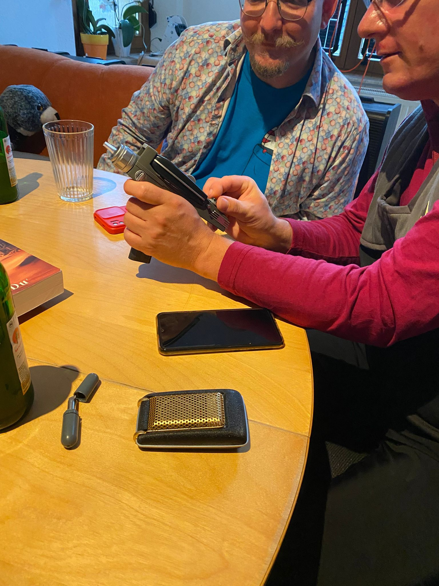
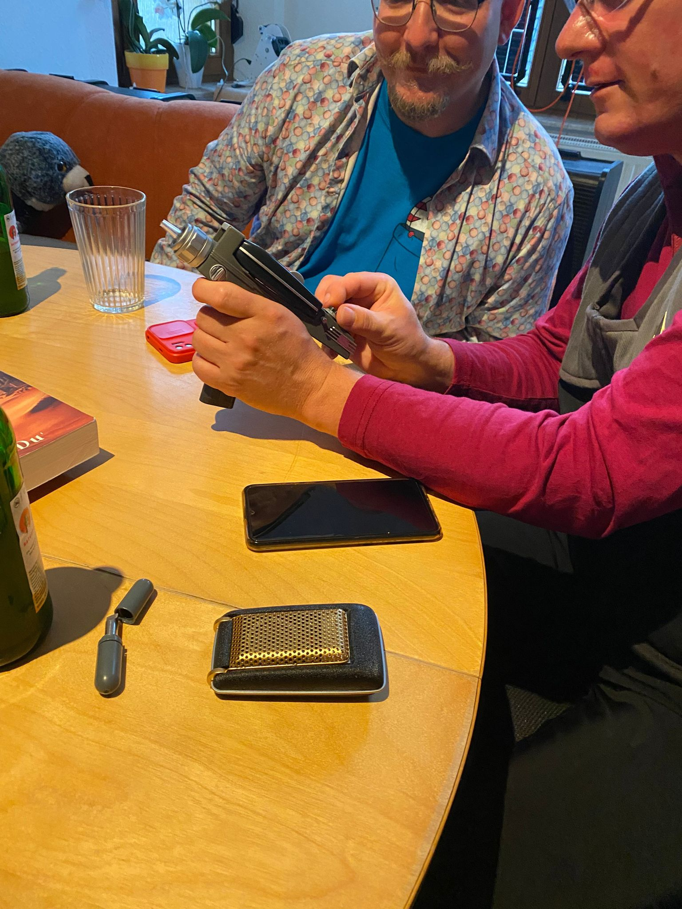

05.04.2023
First Contact Day – Gründung online


24.04.2023
1. STAR TREK Dinner – Halle / Wenzels Prager Bierstuben

27.06.2023
3. STAR TREK Dinner – Halle / Kartoffelhaus


21.07.2023
4. STAR TREK Dinner – Leipzig / bei Gaby
 



29.08.2023
5. STAR TREK Dinner – Halle / GiG


20.05.2024
Raumschiff Eberswalde


06.07.2024
German Film Comic Con Babelsberg 2024


31.08.2024
17. STAR TREK Dinner – Leipzig / Picknick

22.11.2024
20. STAR TREK Dinner – Halle / Spielehaus